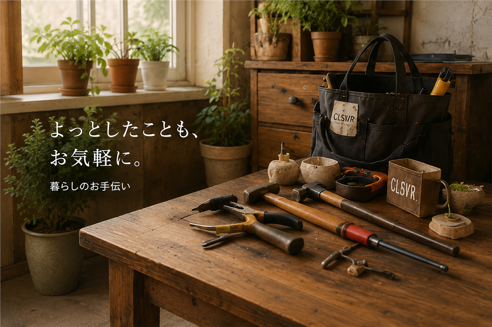
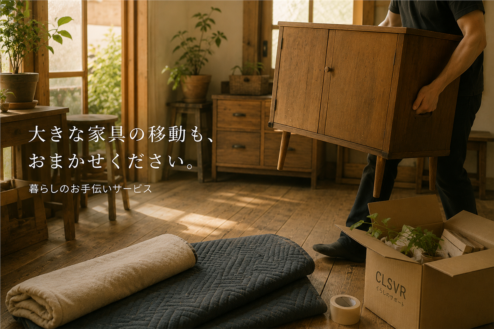
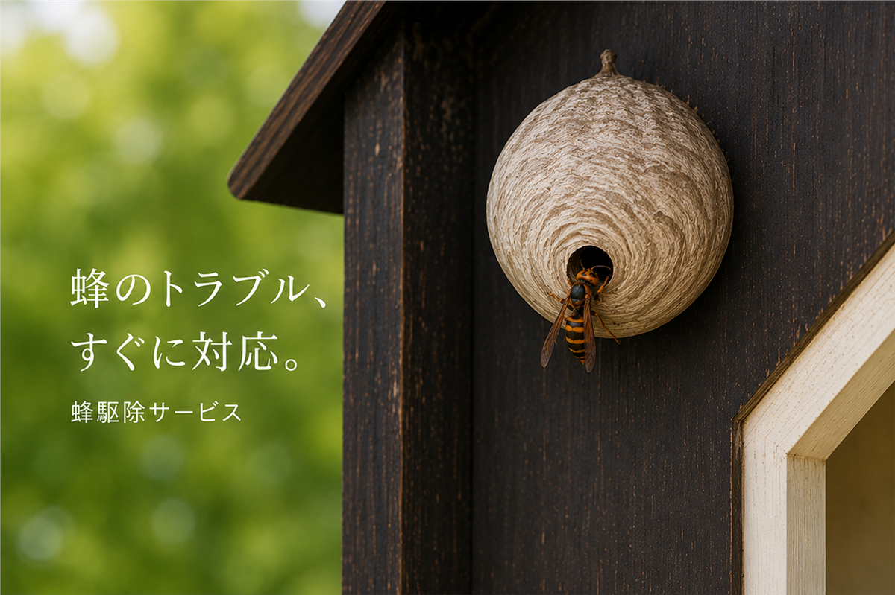
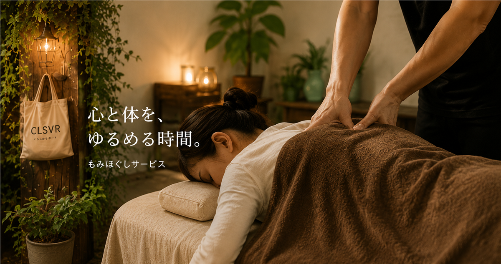

山口県の地域密着サポート
鍵の開錠、荷物や家具の移動、雨どい掃除など、小さな困りごとも内容を確認して対応します。

できるか分からない時も
「どこへ頼めばいいか分からない」という段階でも大丈夫です。写真があれば、作業内容を判断しやすくなります。
よくご相談いただける内容
玄関や車など、状況と本人確認書類を確認して対応します。
重い家具の移動や配置換えをお手伝いします。
落ち葉や詰まりの状況を確認し、安全に作業できる範囲で対応します。
伸びた草や庭まわりの小さなお手入れをお手伝いします。
荷物整理や手の届きにくい場所の掃除をご相談ください。
掲載外の内容も、まずは状況をお聞かせください。
ご相談の流れ
ほかにも対応しています

調査・駆除・撤去

ご自宅・宿泊先へ
Web・AI・端末支援
予約・相談
内容を整理して公式LINEへ送れる相談フォームをご用意しています。